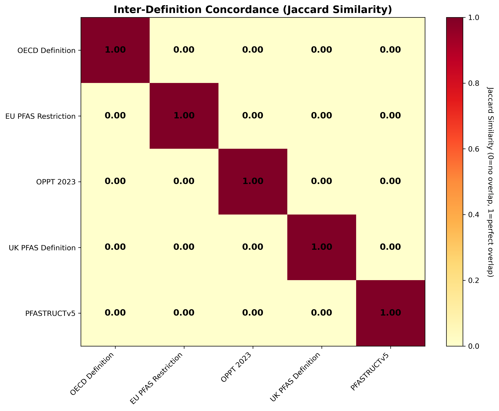

🧪 PFAS Definitions Benchmark Report
Generated: 2026-02-04 09:00:26
Benchmark Run: 20260204_090021
📋 Definitions Tested
1. OECD Definition
At least one CF₃ or CF₂ group (not bonded to H, Cl, Br, I)
2. EU PFAS Restriction
Similar to OECD but with more exclusion criteria
3. OPPT 2023
Three inclusion criteria for perfluorinated compounds
4. UK PFAS Definition
At least one CF₃ or CF₂ group (not bonded to Cl, Br, I)
5. PFASTRUCTv5
Custom structural patterns OR fluorine ratio ≥ 0.3
Summary Statistics
| Definition |
Sensitivity (%) |
TP Count |
Specificity (%) |
FP Count |
| OECD Definition |
100.0 |
24/24 |
70.0 |
6/20 |
| EU PFAS Restriction |
100.0 |
24/24 |
100.0 |
0/20 |
| OPPT 2023 |
95.8 |
23/24 |
100.0 |
0/20 |
| UK PFAS Definition |
100.0 |
24/24 |
85.0 |
3/20 |
| PFASTRUCTv5 |
100.0 |
24/24 |
65.0 |
7/20 |
🎯 Key Findings
True Positives Tested
24
Known PFAS compounds
True Negatives Tested
20
Non-PFAS compounds
Edge Cases Analyzed
21
Borderline compounds
Performance Testing
0
Mean: 0.00 ms
Sensitivity vs Specificity
This plot shows how well each definition balances correctly identifying PFAS (sensitivity)
with correctly rejecting non-PFAS (specificity). The ideal position is the top-right corner (100%, 100%).
Detection Heatmap
Shows which definitions successfully identify different categories of PFAS compounds.
Inter-Definition Concordance
Jaccard similarity between definitions (1.0 = perfect agreement, 0.0 = no overlap).

Performance Analysis
Execution time vs molecule size for definition checking.
🔍 Detailed Results
True Positives (Known PFAS)
True Negatives (Non-PFAS)
- OECD Definition: 6 false positives
- EU PFAS Restriction: No false positives ✓
- OPPT 2023: No false positives ✓
- UK PFAS Definition: 3 false positives
- PFASTRUCTv5: 7 false positives
Edge Cases
Split decisions (definitions disagree): 10/21
Unanimous decisions (all agree): 11/21